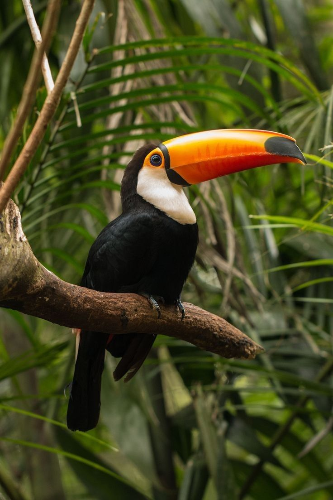
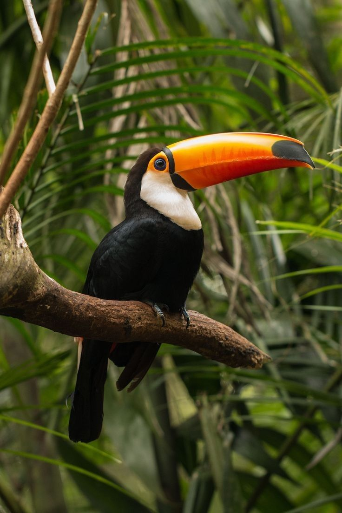

Adaptações
As adaptações à vida terrestre podem incluir características físicas, comportamentais e fisiológicas que permitem que os organismos sobrevivam e prosperem em terra firme. Por exemplo, as plantas desenvolveram raízes para absorver água e nutrientes do solo, enquanto os animais terrestres desenvolveram pulmões ou outros sistemas respiratórios para obter oxigênio do ar.
Uma ampla variedade de ecossistemas
A vida terrestre habita uma ampla variedade de ecossistemas, desde desertos e florestas até savanas, tundras e ambientes urbanos. Esses ecossistemas terrestres têm características ecológicas distintas que influenciam a composição da vida que eles sustentam.
A interação entre a vida terrestre e o ambiente é um campo de estudo importante na biologia e na ecologia. A compreensão dessas interações é fundamental para a conservação da biodiversidade e para a manutenção dos ecossistemas terrestres saudáveis.
Em resumo...
A vida terrestre habita uma ampla variedade de ecossistemas, desde desertos e florestas até savanas, tundras e ambientes urbanos. Esses ecossistemas terrestres têm características ecológicas distintas que influenciam a composição da vida que eles sustentam.
A interação entre a vida terrestre e o ambiente é um campo de estudo importante na biologia e na ecologia. A compreensão dessas interações é fundamental para a conservação da biodiversidade e para a manutenção dos ecossistemas terrestres saudáveis.
.jpg)

 
